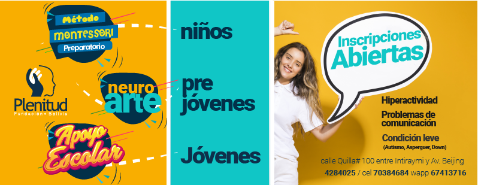

Fundación Plenitud
NIT: 382663023 - Régimen General | Reconocimiento Legal: Decreto Departamental N° 3973
Propósito: Ofrecer apoyo psicológico integral y capacitación especializada a jóvenes con discapacidad intelectual para lograr su inclusión plena y digna en la sociedad y el ámbito laboral de Cochabamba. Buscan asegurarles mayores oportunidades y un desarrollo óptimo hacia una vida plena.
"Mentes distintas, mismas oportunidades"
Programas Especializados para un Desarrollo Pleno
- 1. Apoyo Psicológico Individual: Terapias para la gestión emocional y autonomía.
- 2. Capacitación e Inclusión Laboral: Talleres de habilidades blandas y preparación para el empleo.
- 3. Talleres de Habilidades Sociales/Vida Digna: Desarrollo de la independencia personal y social.
Historias de Transformación
"Logros y Transformación: El Impacto de Nuestro Trabajo"